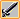
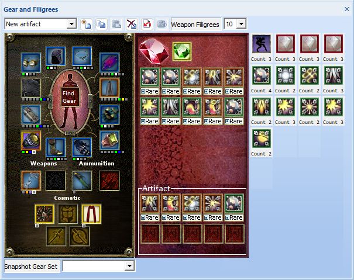
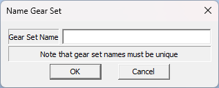
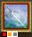
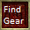

The Gear and Filigrees pane display can be toggled by clicking the button

in the Standard Toolbar.See also Menus | File Menu | Build Level Menu | Edit Menu | Forum Export Menu | Development Menu | Gear Menu | Settings Menu | View Menu | Help Menu | Standard Toolbar
Panes: Main View | Breakdowns | Bonuses | Builds | Class and Levels | Content I Own | DPS | DCs | Enhancements | Epic Destinies | Granted Feats | Inventory | Log | Notes | Past Lives | Quests and Favor | Reaper Enhancements | Skills | Spells and SLAs | Stances

By default a new character gets a single gear setup called “Standard”. The 5 buttons to the right of the drop list allows the following functions:

The drop list combo box only becomes active when you have 2 or more Gear Sets for a character defined. Select the Gear Set you wish to view your character for. Only one Gear Set can be active at a time.
To equip or edit an item, left click the item slot that you wish to choose an item for. The Item Select Dialog is displayed.
Item slots can be disabled by other selected options.
To clear an item, you can right click an item slot. This comes with an “Are you sure?” dialog to confirm item removal.
Items in the view have augment slots shown for them. These slots are shown as the same colour as the augment type, with special augment slot types shown as a grey colour. The border colour of these icons is Black if an augment has been selected for this slot and White if no augment has been selected.

The above is an example item with Red and Orange augment slots. The Red augment has a selected option and has a Black border, while the Orange augment is empty and shown with a White border.

Clicking “Find Gear” displays the “Find Gear” dialog which allows you to search and equip items across all accessory slots (not weapon slots).At the bottom of the window icons for any Item Sets which may apply to your character are shown.
One icon for each Set along with the number of items that count towards that set bonus are shown. You can mouse over an icon to see which effects of the Set Bonus you have for the number of stacks displayed.
This section allows you to configure how many Filigree slots you have from your Sentient weapon/Minor Artifact and which Filigrees you have slotted.
Choose how many Weapon Filigree slots you have in the drop list control. A slot position for each Filigree is displayed. Selecting less Filigrees than you have slotted clears the unwanted Filigrees.
Left click a Filigree position to display a menu of available Filigrees. Once a Filigree has been selected, its “Rare” state can be changed by clicking the section of the icon.
You can clear a Filigree by right clicking it.
You can also select the Sentient Jewel type slotted, but this is for cosmetic purposes only.
Artifact filigree sections can only be setup if you have an Artifact equipped.
You cannot have a duplicate Filigree in a weapon or Artifact Filigree set (duplicates across weapon/Artifact sets are allowed)